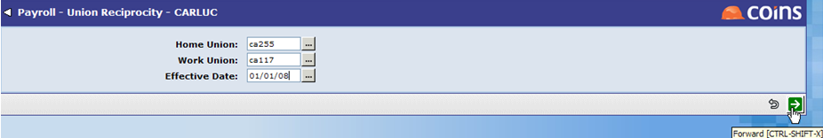
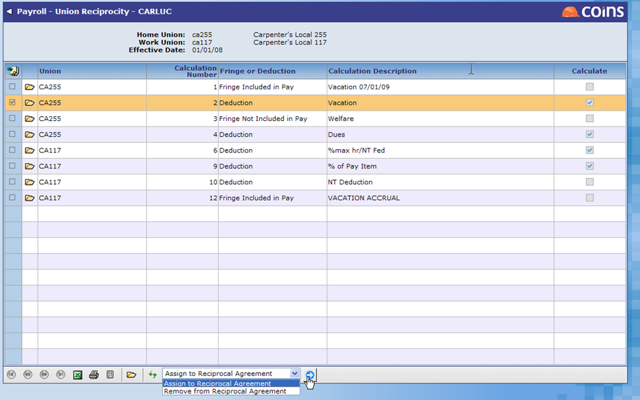
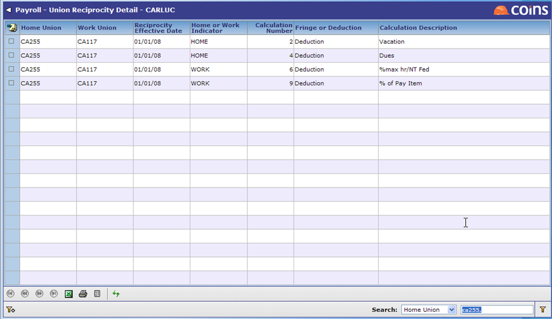
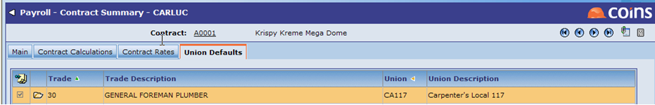
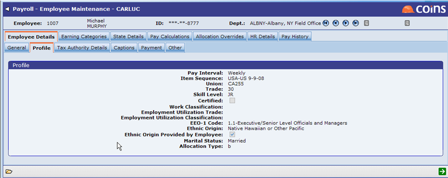
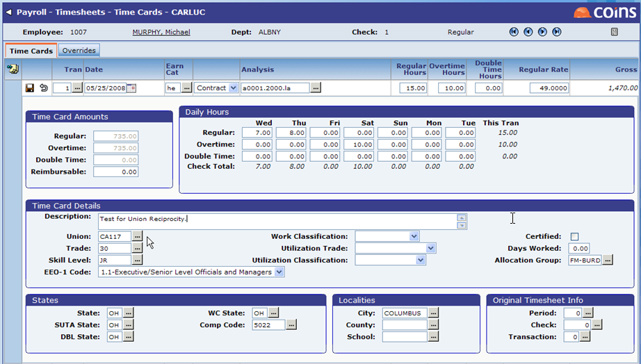
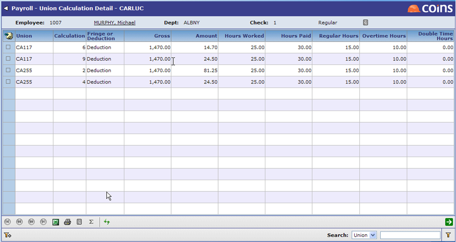

Factors to consider when you want Union Reciprocity to work correctly:
Union Reciprocity Function
You can use the Union Reciprocity function to either add a new reciprocal agreement between two unions or to modify an existing agreement.
- In Payroll, go to Global Setup > US Specifics > Union Reciprocity.
- Enter the Home Union, Work Union, and Effective Date of the reciprocal agreement.
For illustration purposes, the screenshot below shows the Home Union as CA255, the Work Union as CA117, and the Effective Date of the reciprocal agreement as 01/01/08.

- Click
 . You are presented with a screen listing all of the active (non-dormant) union calculations for both the home and work unions.
. You are presented with a screen listing all of the active (non-dormant) union calculations for both the home and work unions.

- Select which calculations should be used when an employee's home union and work union match the unions previously selected for this reciprocal agreement.
For illustration purposes, in the screenshot above you could select certain calculations that would only calculate when the employee's home union is CA255 and the work union is CA117.
To select the record(s) of the calculations you wish to use, you may do one of the following:
- Select individual records by opening each record and
- Select multiple records, choose Assign to Reciprocal Agreement in the Choose Action selector and click
 . The Calculate box is automatically selected for all of the records you chose. For example, the screenshot above shows that four records have been selected (calculation numbers 2, 4, 6, 9) and marked to calculate.
. The Calculate box is automatically selected for all of the records you chose. For example, the screenshot above shows that four records have been selected (calculation numbers 2, 4, 6, 9) and marked to calculate.
Union Reciprocity Detail
The Union Reciprocity Detail
NOTE

You may choose to configure your
NOTE
In the example below, if the trade on the Timecard is 30, the Work Union will be CA117.

Profile tab in Employee Maintenance
The employee's Home Union is defined on the Profile tab of Employee Maintenance. You can also define the trade here and default it onto the Timecard. The trade can be overwritten during timecard entry if necessary.

Timesheets
When entering timecards in Timesheets, the Work Union can either default from

Pay Calculations
Pay Calculations use Union Calculations as defined in Union Reciprocity.
